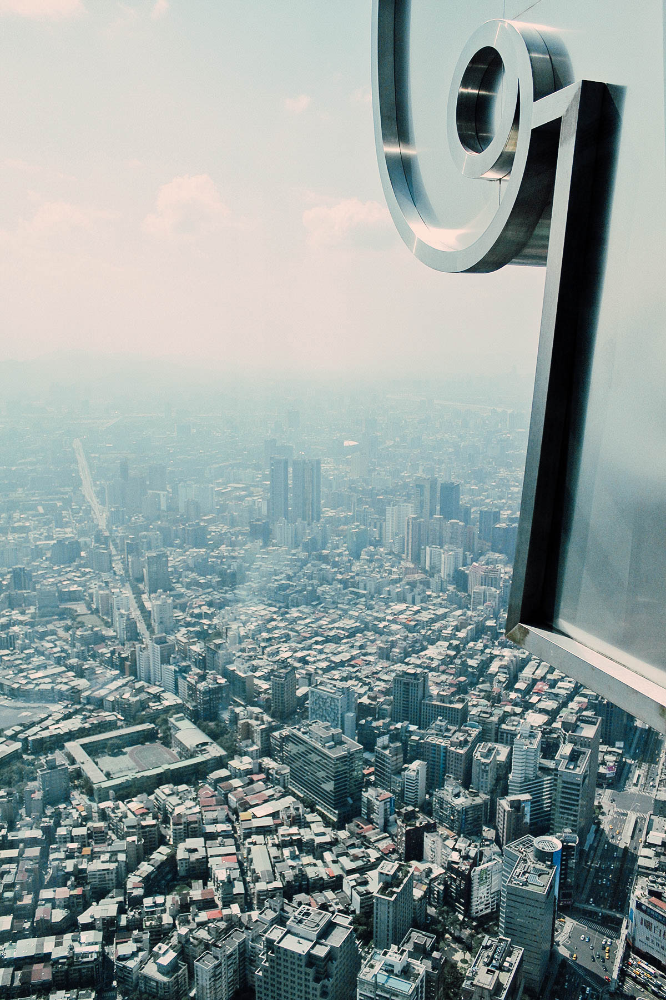
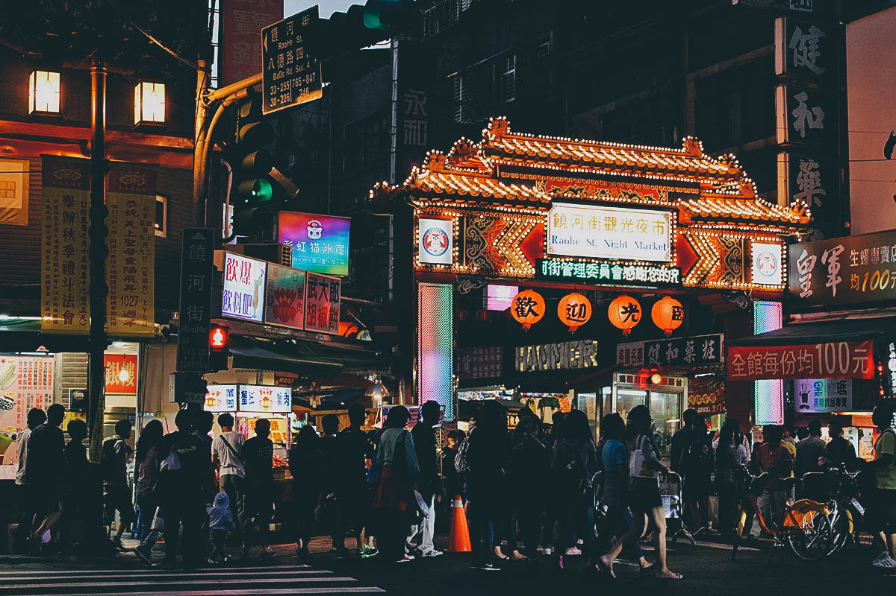
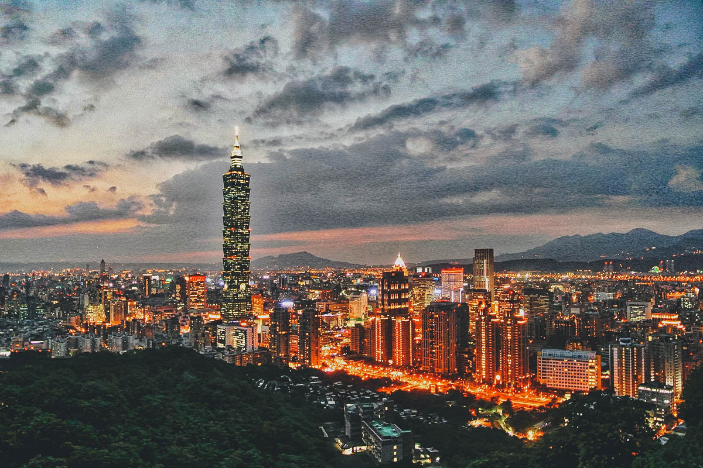
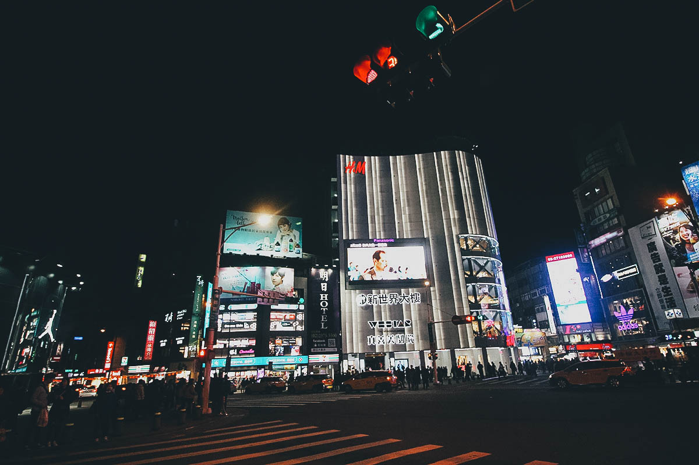

The First-Timer’s Travel Guide to Taipei, Taiwan
10.1.2018
I have OCD. I obsess and obsess and obsess over certain things until I think they’re (near) perfect. Which is why this Taipei travel guide, or at least the first version of it, has been eating me up for almost four years now.
When we first visited Taipei in 2014, it was a spur of the moment trip that lasted just three days. I wasn’t expecting much from that trip, but to my surprise, I wound up falling in love with Taipei and Taiwan. The problem was, three days didn’t give us enough time to do all the things we wanted to do. It didn’t give us enough time to see all the places we wanted to see, it didn’t give us enough time to eat all the food we wanted to eat, which is why I’ve been dying to come back to Taipei ever since. Those three days gave me enough material to come up with a decent travel guide, but to me, it was painfully incomplete. I had to do it again, and this time, I had to do it right.
I finally got my chance this March when we took a two-week trip to Taiwan, five days of which were dedicated to this city and finishing what we started four years ago. This travel guide is by no means perfect (yet), but it paints a much better picture of what this charismatic and surprisingly progressive city has to offer.
Once holding the distinction of being the world’s tallest building, there’s no better place to get a bird’s eye view of Taipei than from the Taipei 101 Observatory. Located on the 89th floor, the world’s fastest elevators will shoot you up to the observatory in a mind-numbing 37 seconds. It sure makes up for that 45-minute wait! Tickets normally cost NTD 600 but you can get them for just NTD 510 if you buy tickets through Kkday. Follow the link to purchase Taipei 101 Observatory tickets through kkday.
Taiwan is all about night markets. You can’t go to Taiwan without eating your way through at least one. There are several you can visit in Taipei, but Shilin and Raohe night markets are the city’s biggest and most popular. There you’ll find a dizzying array of delicious and cheap street food dishes like flame-torched beef, giant chicken chops, sausages, pepper buns, and a whole lot more. Aside from all the food you’ll be tempted by, many night markets have shopping and game stalls as well, so there are plenty of other things you can do aside from eating. Don’t be surprised if you wind up spending your whole evening at a Taiwanese night market.
Now that you’ve gotten a killer view of the city from Taipei 101, how about getting a killer view of Taipei 101 from Elephant Mountain? We didn’t do this but if you’re in the mood for an easy hike, then you may want to climb up Elephant Mountain which is conveniently located at the edge of the city. Just take the MRT to Xiangshan Station (Red Line, Exit 2) and walk 10 minutes south to the start of the hiking trail. Don’t worry about your fitness level either. There are plenty of steps but it’s a relatively easy 15-30 minute hike to the top.
Filled with trendy shops, boutiques, restaurants, and cafes, the Ximending area is where young Taiwan goes to shop and kill time. If you’re traveling to Taipei to go shopping, then you’ll probably be spending a lot of time here. As described, we stayed in Ximending on our last trip and the place was always buzzing with activity no matter what time of day it was, kind of like Myeongdong in Seoul. It’s especially fun at nights on weekends when young Taiwan flocks to the area to party. The atmosphere is electric.